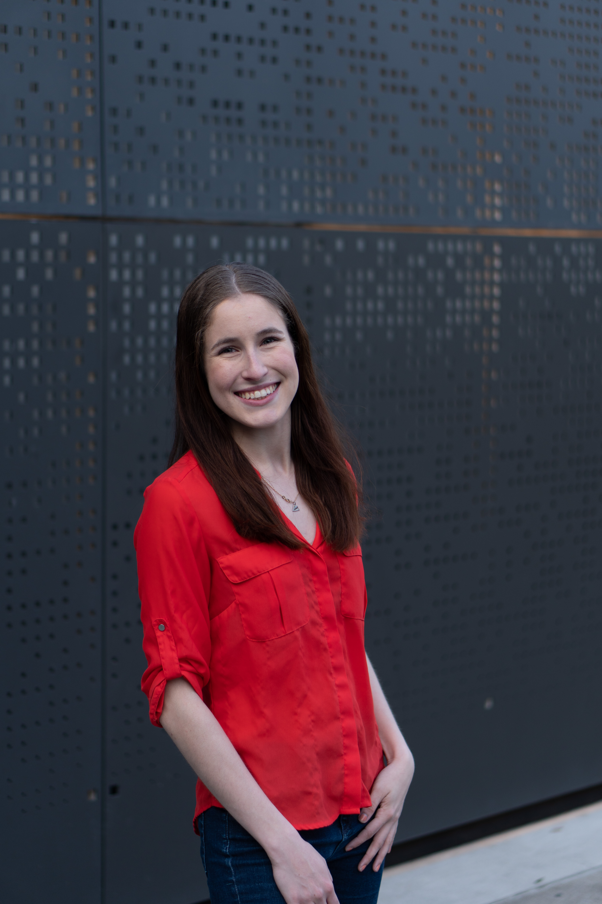
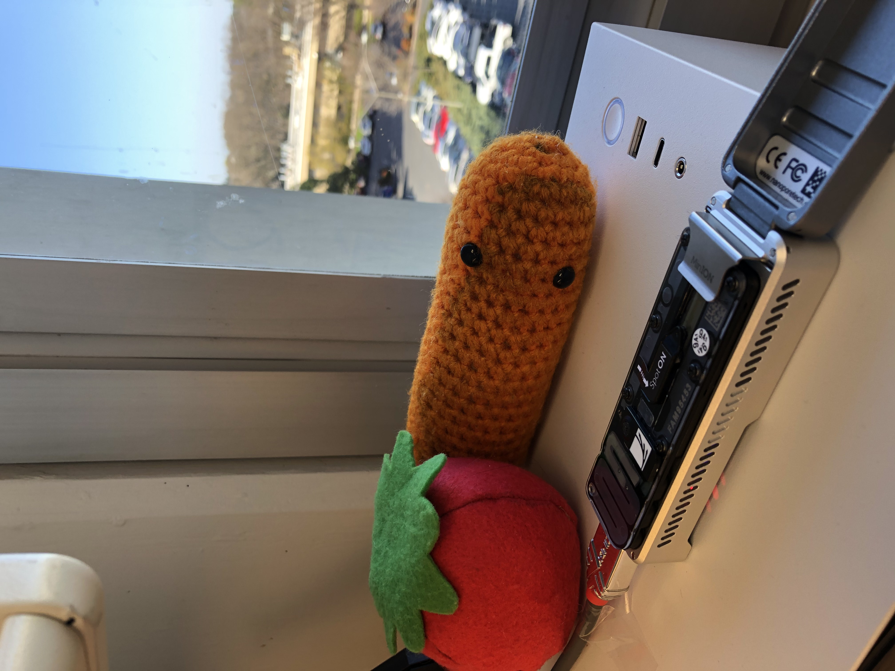
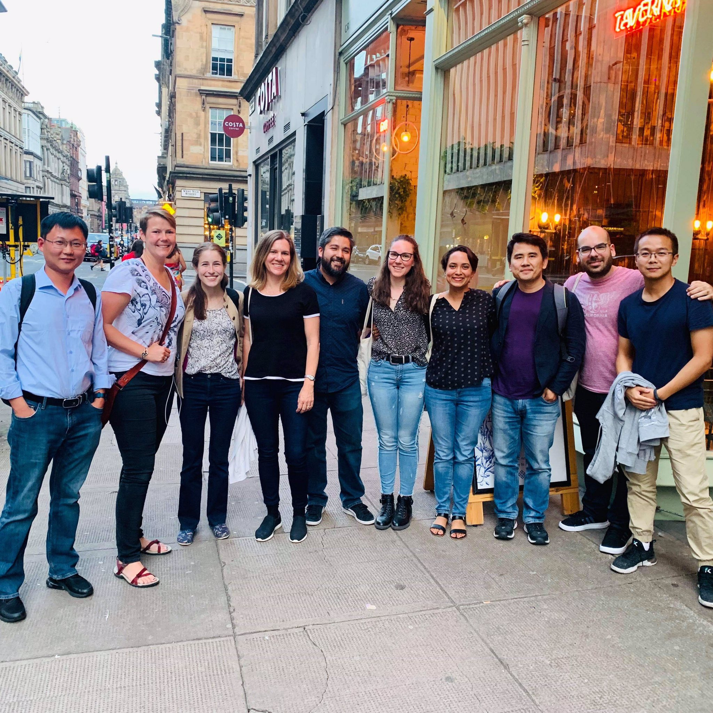

I was introduced to plant pathology working for Dr. Jeff Chang in the Botany and Plant Pathology Department at Oregon State. Admittedly, the introduction to this field was partly by accident and not somthing I was interested in at first. I worked toward a degree in Biochemistry and Biophysics thinking I would work in the medical field. But after a year, I slowly fell in love with bacterial pathogens, plant pathology research, and now I can’t think of working on anything else.
During those four years, I was mentored by many incredible people from all over the univeristy and from the departments I both worked in (Botany and Plant Pathology) and took coursework from (Biochemistry and Biophysics). At the end of three years, I had to make a key decision: do I want to go to graduate school? My only exposure to this line of work was from the last couple of years.
I decided to do something drastic: doing research in plant pathology at another lab away from all my comforts. With a little help from a faculty member visiting from Isreal, I was offered the opportunity to work at the Max Plank Institute for Evolutionary Biology for Dr. Eva Stukenbrock in Ploen, Germany. At the time, I had only been outside the US once as a kid. While three months is not long, it was probably one of the most influencial experiences of my life. I learn so much from an overall incredible lab and institute.
I feel very blessed to have met so great people along the way who are both my mentors, collegues, and dear friends. I knew after that, despite my initial reluctance, I was on the right path. After graduate school interviews, I ended up at UC Davis in Dr. Gitta Coaker’s lab. While I still have so much to learn, I try to use my broad experiences to tackle major questions regarding Gram-postive bacterial pathogens. If you want to know more about my current projects, check out the research tab of this website. Or click here.
I am hopeful that in the future I can one day run my own lab and mentor students, inspiring them to discover the black box of nature and themselves in the process, just as my many mentors have done for me.
Email address:
dmstev [at] ucdavis.edu
Mailing address:
Department of Plant Pathology
357 Hutchison Hall
University of California, Davis
Davis, CA 95616